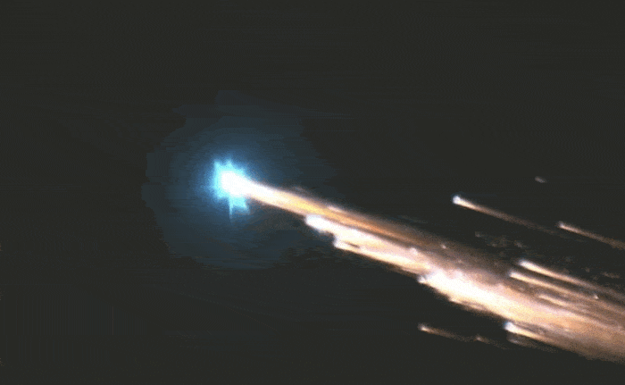

Many boring days pass by and you eventually make it to the asteroid belt. Because of your calculated spin around Jupiter, you've set your course to pass over the asteroid belt. You watch its rough formations pass below you, and think about how much gold there might be in each of those grey floating rocks.

Many more boring days pass by and you spend a lot of time sleeping. Zero G can't entertain you forever. You continue to fly through space and you eventually see Mars in the distance. Behind it you see another planet that is also bright, it is your home planet, Earth.
As Mars looms larger in the sky day by day, you prepare yourself to slingshot around a planet once again. Mars is much smaller, which will require you to skim much closer to its surface enabling you to use more of its potential energy. The trajectory is risky, but you've had a long time to do your calculations. You begin your descent towards mars, passing below one of its moons, Phobos.

You begin to enter Mars atmosphere and you are stunned. None of your atmospheric gauges are reading accurately, and your ship is on an unstable trajectory!


As sirens wail and you fight your joystick, you feel you ship beginning to fragment as it burns up in Mars's atmosphere. You are going way too fast, and the friction of Mars's carbon dioxide atmosphere is slowly eroding your ship!

You must decide what you want to do...
or
Try and use the bottom of your ship as a heat shield so you can land on Mars. This would be extremely dangerous, but would allow you to purchase a new ship if you could land. Also, you have plenty of galactic currency, but you don't know how long it will take to transfer to Martian currency.